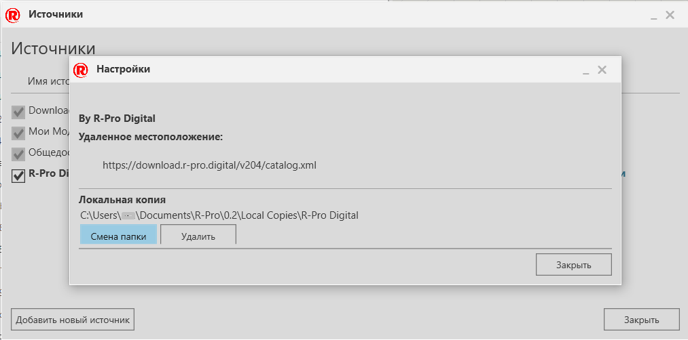

Сопоставление локальной папки с удаленным источником |
|
Локальная копия автоматически загружается в заданное место на вашем устройстве. Вы можете переопределить местоположение, сопоставив другую папку с удаленным источником. 1.Перейдите в панель Каталог. 2.Нажмите на ПЛЮС , а затем нажмите Редактировать источники. 3.В Источниках, найдите удаленный источник, который вы хотите отредактировать. 4.Для удаленного источника правее от столбца Расположение, нажмите Настройки. 5.В Настройках, нажмите Смена папки. 6.В окне Обзор папок, Выполните одно из следующих : ·Чтобы использовать существующую папку, перейдите к папке, в которую вы хотите поместить локальную копию. . ·Чтобы использовать новую папку, перейдите в папку, в которой вы хотите сохранить локальную копию, и щелкните Создать папку . 7.Нажмите Ok.
 |